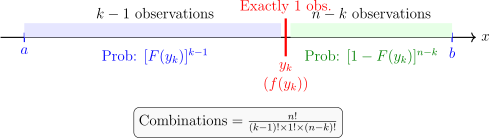

1.2 Distribution of Order Statistics
Suppose \(X_1, X_2, \dots , X_n\) is a random sample from a continuous population. Arranging the observations in increasing order gives the order statistics \[ X_{(1)} \leq X_{(2)} \leq \dots \leq X_{(n)} ,\] often written \(Y_1, Y_2, \dots , Y_n\) to distinguish them from the raw sample. (For a continuous population, ties have probability zero, so the inequalities are strict with probability one.)
- \(Y_1 = \min (X_1, \dots , X_n)\) is the smallest order statistic.
- \(Y_n = \max (X_1, \dots , X_n)\) is the largest.
- \(Y_{(n+1)/2}\), for odd \(n\), is the sample median.
Order statistics are dependent even though the sample is independent: knowing \(Y_1\) is large forces every other \(Y_k\) to be large.
1.2.1 The Joint PDF
Theorem 1.2.1. If \(X_1, X_2, \dots , X_n\) is a random sample from a population with continuous p.d.f. \(f(x)\), then the joint p.d.f. of the order statistics \(Y_1, Y_2, \dots , Y_n\) is \[ g(y_1, y_2, \dots , y_n) = n! \prod _{i=1}^n f(y_i), \qquad y_1 < y_2 < \dots < y_n ,\] and zero otherwise.
Proof. The map from \((x_1,\dots ,x_n)\) to its sorted version is \(n!\)-to-one: each of the \(n!\) orderings of a sample with distinct values gives the same ordered vector. On each of the \(n!\) regions \(x_{\pi (1)}<\cdots <x_{\pi (n)}\) the map is a permutation of coordinates, with Jacobian \(\pm 1\), and the joint density of the sample, \(\prod f(x_i)\), takes the same value \(\prod f(y_i)\) at every preimage. Adding the \(n!\) contributions gives the result. □
Example 1.2.2. Let \(X_1, X_2, X_3\) be a random sample of size \(3\) from the exponential population with p.d.f. \(f(x) = e^{-x}\), \(x > 0\). Find
- (i)
- the joint p.d.f. of the order statistics \(Y_1, Y_2, Y_3\);
- (ii)
- the marginal p.d.f. of the minimum \(Y_1\);
- (iii)
- the marginal p.d.f. of the maximum \(Y_3\).
Solution.
- (i)
- By Theorem 1.2.1, \[g(y_1, y_2, y_3) = 3!\, e^{-y_1}e^{-y_2}e^{-y_3} = 6 e^{-(y_1 + y_2 + y_3)}, \qquad 0 < y_1 < y_2 < y_3 < \infty .\]
- (ii)
- Integrate out \(y_3\) from \(y_2\) to \(\infty \), then \(y_2\) from \(y_1\) to \(\infty \): \begin {align*} g_1(y_1) &= 6e^{-y_1} \int _{y_1}^{\infty } e^{-y_2}\int _{y_2}^{\infty } e^{-y_3}\, dy_3 \, dy_2 = 6e^{-y_1} \int _{y_1}^{\infty } e^{-2y_2}\, dy_2\\ &= 6e^{-y_1}\cdot \frac {1}{2}e^{-2y_1} = 3e^{-3y_1},\qquad y_1 > 0 . \end {align*}
So the minimum of three exponential lifetimes with mean \(1\) is exponential with mean \(\frac 13\).
- (iii)
- Integrate out \(y_1\) from \(0\) to \(y_2\), then \(y_2\) from \(0\) to \(y_3\): \begin {align*} g_3(y_3) & = 6e^{-y_3} \int _{0}^{y_3} e^{-y_2}\int _0^{y_2}e^{-y_1}\,dy_1\,dy_2 = 6e^{-y_3} \int _{0}^{y_3} (e^{-y_2} - e^{-2y_2})\, dy_2\\ & = 6e^{-y_3} \left ( \frac {1}{2} - e^{-y_3} + \frac {1}{2}e^{-2y_3} \right ) = 3e^{-y_3} - 6e^{-2y_3} + 3e^{-3y_3},\qquad y_3 > 0 . \end {align*}
1.2.2 Derivation of Extremes: Minimum and Maximum
The distributions of the maximum and the minimum are fundamental in reliability theory and extreme value analysis, and they can be found directly from the c.d.f. without integrating the joint density.
Theorem 1.2.3. Let \(X_1, X_2, \dots , X_n\) be independent and identically distributed continuous random variables with p.d.f. \(f\) and c.d.f. \(F\). Then the maximum \(Y_n\) and the minimum \(Y_1\) have c.d.f.s and p.d.f.s \[F_{Y_n}(y) = [F(y)]^n ,\qquad g_n(y) = n[F(y)]^{n-1} f(y) ,\] \[F_{Y_1}(y) = 1 - [1 - F(y)]^n ,\qquad g_1(y) = n[1 - F(y)]^{n-1} f(y) .\]
Proof. The maximum is at most \(y\) if and only if every observation is at most \(y\), so by independence \[F_{Y_n}(y) = P(X_1 \leq y,\ \dots ,\ X_n \leq y) = \prod ^n_{i = 1}P(X_i\leq y) = [F(y)]^n .\] The minimum exceeds \(y\) if and only if every observation exceeds \(y\), so \[F_{Y_1}(y) = 1 - P(X_1 > y,\ \dots ,\ X_n > y) = 1 - [1 - F(y)]^n .\] Differentiating gives the p.d.f.s. □
Example 1.2.4. Let \(X_1,\dots ,X_n\) be a random sample from the uniform distribution on \((0,\theta )\). Find the p.d.f. and the mean of \(Y_n\), and show that \(\frac {n+1}{n}Y_n\) has mean \(\theta \).
Solution. Here \(F(y) = \frac {y}{\theta }\) on \((0,\theta )\), so \(g_n(y) = \frac {ny^{n-1}}{\theta ^n}\) for \(0<y<\theta \), and \[E(Y_n) = \int _0^\theta y\,\frac {ny^{n-1}}{\theta ^n}\,dy = \frac {n}{n + 1}\theta .\] So \(Y_n\) underestimates \(\theta \) on average, as it must since \(Y_n<\theta \), and \(\frac {n+1}{n}Y_n\) has mean exactly \(\theta \); it is used as an estimator in the chapter on estimation.
1.2.3 The \(k^{\text {th}}\) Order Statistic
The same reasoning gives the distribution of any order statistic. For \(Y_k\) to lie in a small interval \((y, y + dy)\), the \(n\) observations must fall into three bins:
- 1.
- \(k-1\) observations to the left of \(y\), each with probability \(F(y)\);
- 2.
- exactly one observation in \((y,y + dy)\), with probability about \(f(y)\,dy\);
- 3.
- the remaining \(n-k\) observations to the right, each with probability \(1-F(y)\).

The number of ways to assign the observations to the three bins is the multinomial coefficient \(\frac {n!}{(k - 1)!\,1!\,(n - k)!}\), which gives the following theorem.
Theorem 1.2.5. Let \(X_1, X_2, \dots , X_n\) be a random sample of size \(n\) from a continuous population with p.d.f. \(f\) and c.d.f. \(F\), supported on \((a, b)\). The p.d.f. of the \(k^{\text {th}}\) order statistic \(Y_k\) is \[ g_k(y) = \frac {n!}{(k - 1)!\,(n - k)!} [F(y)]^{k-1} [1 - F(y)]^{n - k} f(y) ,\qquad a < y < b ,\] and zero otherwise.
Proof. By the multinomial argument above, \begin {align*} P(y<Y_k\leq y + h) ={}& \frac {n!}{(k - 1)!(n - k)!}[F(y)]^{k-1}[1 - F(y + h)]^{n-k}\\ &\times \left (F(y + h) - F(y)\right ) + o(h), \end {align*}
the remainder accounting for two or more observations in the interval. Dividing by \(h\) and letting \(h\to 0\) gives \(g_k(y)\). □
With \(k = n\) and \(k = 1\) this reduces to Theorem 1.2.3.
Exercise 1.2.6. In Example 1.2.2 the marginal p.d.f.s of the minimum \(Y_1\) and the maximum \(Y_3\) of an exponential sample of size \(3\) were found by double integration. Use Theorem 1.2.5 to find directly the p.d.f.s of
- (i)
- the sample minimum \(Y_1\);
- (ii)
- the sample median \(Y_2\);
- (iii)
- the sample maximum \(Y_3\),
and check that the results for \(Y_1\) and \(Y_3\) agree.
Answer: With \(F(y) = 1 - e^{-y}\): \(g_1(y) = 3e^{-3y}\); \(g_2(y) = 6(1 - e^{-y})e^{-2y}\); \(g_3(y) = 3(1 - e^{-y})^2e^{-y} = 3e^{-y} - 6e^{-2y} + 3e^{-3y}\), all for \(y>0\).
Theorem 1.2.7. For a random sample of size \(n\) from a population with c.d.f. \(F\), discrete or continuous, the c.d.f. of the \(k^{\text {th}}\) order statistic is \[G_k(y) = \sum ^n_{j = k}\binom {n}{j}[F(y)]^j[1 - F(y)]^{n-j} .\]
Proof. \(Y_k\leq y\) exactly when at least \(k\) of the \(n\) observations are at most \(y\). The number of observations at most \(y\) is binomial with parameters \(n\) and \(F(y)\), so \(P(Y_k\leq y)\) is the probability that this binomial variable is at least \(k\). □
Example 1.2.8. Let \(X_1, X_2, X_3\) be a random sample from \(f(x) = 2x\), \(0< x < 1\). Find the c.d.f. and the p.d.f. of the median \(Y_2\).
Solution. The population c.d.f. is \(F(x) = x^2\) for \(0<x<1\) (with \(F = 0\) for \(x\leq 0\) and \(F = 1\) for \(x\geq 1\)). By Theorem 1.2.7, for \(0<y<1\), \[G_2(y) = \binom {3}{2}(y^2)^2(1 - y^2) + \binom {3}{3}(y^2)^3 = 3y^4(1 - y^2) + y^6 = y^4(3 - 2y^2) ,\] with \(G_2 = 0\) for \(y\leq 0\) and \(G_2 = 1\) for \(y\geq 1\). The p.d.f. can be found in two ways:
- differentiating the c.d.f., \(g_2(y) = \frac {d}{dy}(3y^4 - 2y^6) = 12y^3 - 12y^5 = 12y^3(1 - y^2)\);
- from Theorem 1.2.5 with \(n = 3\), \(k = 2\), \(g_2(y) = \frac {3!}{1!\,1!} (y^2)(1 - y^2)(2y) = 12y^3(1 - y^2)\),
both for \(0 < y < 1\).
Example 1.2.9. Find the probability that the median of a sample of size \(5\) from the uniform distribution on \((0,1)\) lies between \(0.4\) and \(0.6\).
Solution. By Theorem 1.2.5 with \(n = 5\), \(k = 3\) and \(F(y) = y\), \(g_3(y) = 30y^2(1 - y)^2\), a beta density. So \[P(0.4<Y_3<0.6) = 30\int _{0.4}^{0.6}y^2(1 - y)^2\,dy = 30\left [\frac {y^3}{3} - \frac {y^4}{2} + \frac {y^5}{5}\right ]_{0.4}^{0.6} \approx 0.365 .\]
1.2.4 Distribution of the Range
The sample range \(R = Y_n - Y_1\) is a measure of dispersion used in quality control and non-parametric statistics. Its distribution follows from the joint distribution of the two extremes, which the same multinomial argument gives.
Theorem 1.2.10. For a random sample of size \(n\) from a continuous population on \((a,b)\), the joint p.d.f. of \(Y_1\) and \(Y_n\) is \[ g_{1n}(y_1, y_n) = n(n-1) [F(y_n) - F(y_1)]^{n-2} f(y_1) f(y_n) ,\qquad a < y_1 < y_n < b .\]
Proof. One observation must be near \(y_1\), one near \(y_n\), and the other \(n - 2\) between them, each with probability \(F(y_n) - F(y_1)\). There are \(n(n - 1)\) ways to choose which observations are the minimum and the maximum. □
Example 1.2.11. Find the distribution of the range \(R\) of a sample of size \(n\) from the uniform distribution on \((0,1)\).
Solution. By Theorem 1.2.10, \(g(y_1,y_n) = n(n - 1)(y_n - y_1)^{n-2}\) for \(0<y_1<y_n<1\). Change variables to \(R = Y_n - Y_1\) and \(S = Y_1\), with Jacobian \(1\) (the method is justified in the next section). For fixed \(r\), \(s\) runs from \(0\) to \(1 - r\), so \[f_R(r) = \int _0^{1 - r}n(n - 1)r^{n-2}\,ds = n(n - 1)r^{n-2}(1 - r),\qquad 0<r<1 ,\] a beta distribution with parameters \(n - 1\) and \(2\), and \(E(R) = \frac {n - 1}{n + 1}\).
Questions on this section
Stuck on something here? Ask below and it stays attached to this topic.